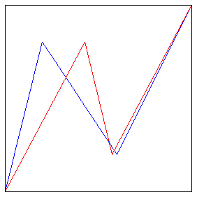

| 6. (a) The coarse Hölder exponents are |
| Log(.8)/Log(.2) ≈ 0.139 , Log(.6)/Log(.4) ≈ 0.557, and Log(.8)/Log(.4) ≈ 0.244 |
| Not all these are equal, so this generator is multifractal. |
| (b) To find the Trading Time increments, first solve this equation for D. |
| .8D + .6D + .8D = 1 |
| The solution is D ≈ 3.8. |
| Then the Trading Time increments are |
| dT1 = .83.8 ≈ 0.428 dT2 = .63.8 ≈ 0.144 dT2 = .83.8 ≈ 0.428 |
| (c) Here are the generators, Price-Clock Time in blue, Price-Trading Time in red. |
|  |
Return to Homework 7 Practice.